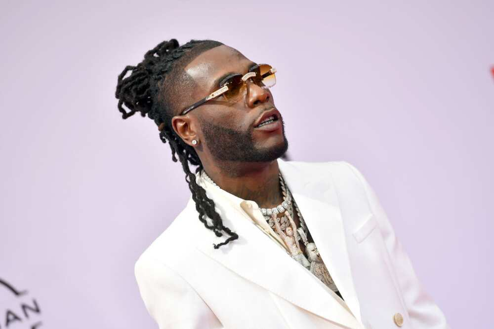
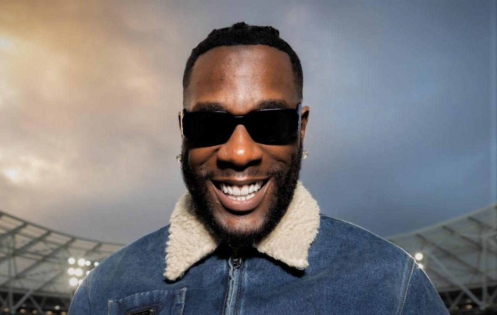

Burna Boy, born Damini Ebunoluwa Ogulu on July 2, 1991, is a Nigerian singer, songwriter, and record producer. He gained recognition in 2012 with his hit single "Like to Party," which was the lead single from his debut album L.I.F.E released in 2013. Burna Boy is known for his unique Afro-fusion style, blending Afrobeat, reggae, dancehall, and pop, and has received numerous awards, including a Grammy Award for his album "Twice as Tall" in 2021. His music often reflects themes of African culture and identity, earning him a significant following both in Nigeria and internationally.
He is from Port-harcourt, he grew up in the united kingdom., started his music career there before coming back to Nigeria to continue his music career. He express his feelings and thought about anything freely with his music.
Here are some of his pictures and album cover
 